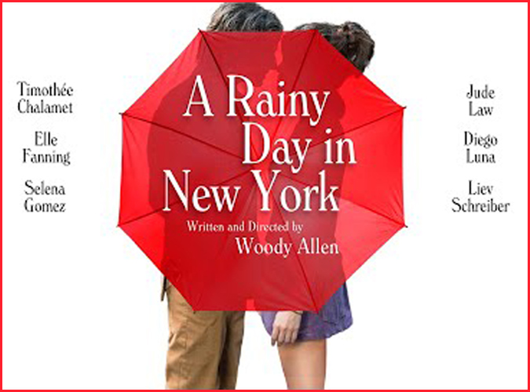
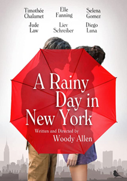
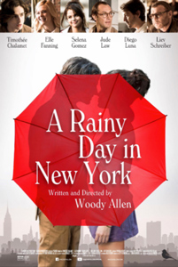

|
||||
A Rainy Day In New York (2018) |
||||
 |
||||
Director |
- |
Woody Allen | ||
Producers |
- |
Letty Aronson Helen Robin Erika Aronson |
||
Screenplay |
- |
Woody Allen |
||
Cinematography |
- |
Vittorio Storaro | ||
Production Designer |
- |
Santo Loquasto | ||
Costume Designer |
- |
Suzy Benzinger | ||
Editor |
- |
Alisa Lepselter | ||
Cast |
||||
Gatsby |
- |
Timothée Chalamet | ||
Chan |
- |
Selena Gomez | ||
Ashleigh |
- |
Elle Fanning | ||
Ted Davidoff |
- |
Jude Law | ||
Francisco Vega |
- |
Diego Luna | ||
Roland Pollard |
- |
Liev Schreiber | ||
Lily |
- |
Annaleigh Ashford | ||
Connie |
- |
Rebecca Hall | ||
Gatsby's Mother |
- |
Cherry Jones | ||
Gatsby's Father |
- |
Jonathan Hogan | ||
Hunter |
- |
Will Rogers | ||
Terry |
- |
Kelly Rohrbach | ||
Tiffany |
- |
Suki Waterhouse | ||
Alvin Troller |
- |
Ben Warheit | ||
Josh |
- |
Griffin Newman | ||
Wanda |
- |
Kathryn Leigh Scott | ||
Dana |
- |
Taylor Black | ||
Bemelmans Bar Waiter |
- |
Don Stephenson | ||
Plot |
||||
In Yardley College, Gatsby Welles learns that his girlfriend Ashleigh Enright will travel to Manhattan to interview the cult director Roland Pollard for the college paper and he plans a romantic weekend with her. Gatsby is the son of a wealthy family in New York and Ashleigh is from Tucson and her father owns several banks. He has no attraction to study in Yardley but gambling and Ashleigh. When they arrive in Manhattan, Gatsby does not tell his parents that are planning a fancy party in the evening. Ashleigh meets Pollard and he invites her to a screening of his new film with his writer Ted Davidoff. Meanwhile Gatsby stumbles upon his friend, who is cinema student, and he accepts to participate in a kiss scene with Chan Tyrell, who is the younger sister of his former girlfriend. Along the rainy weekend in New York, Gatsby and Ashleigh have new experiences and discoveries. |
||||
Filming |
||||
The film's production coincided with the start of the #MeToo movement, causing a resurgence in public interest in the 1992 sexual assault allegation against Allen. In October 2017, Griffin Newman announced via Twitter that he regretted acting in the film and would not work with Allen again in the future. Newman donated his salary to RAINN (Rape, Abuse & Incest National Network). In January 2018, Timothée Chalamet announced via his Instagram account that he also didn't want to profit from the film, donating his salary to RAINN, Time's Up and the LGBT Center of New York. Selena Gomez later made a donation exceeding her salary, over $1 million, to Time's Up. In January 2018, Rebecca Hall also announced via Instagram that she regretted working on the film and would not work with Allen again in the future. She donated her salary to Time's Up. She later explained: "I've been deliberate in saying that the choice wasn't making a judgment one way or another. I don't believe anyone in the public should be judge and jury on a case that is so complex." |
||||
Filming Locations |
||||
- St. Huberts Animal Welfare Center, Madison, New Jersey; - The Pierre, 2 East 61st Street & Fifth Avenue, New York City (Luxury hotel chosen by Gatsby to spend a romantic weekend in New York with Ashley); - Drew University - 36 Madison Avenue, Madison, New Jersey (as Yardley University); - Central Park, New York City (several scenes); - The Metropolitan Museum, 1000 5th Avenue, New York City (Gatsby and Chan visit the Met); - Museum of Modern Art, 11 W 53rd St, New York City; - Minetta Street, Manhattan, New York City (student film shoot Gatsby gets involved in); - Minetta Tavern, 13 Macdougal Street, New York City (restaurant scene); - Hotel Plaza Athéne, 37 E 64th St., New York City (Ashley outside the wrong hotel); - The Albert, 25 E 10th St, New York City (apartment hotel Connie walks out of); - Delacorte Clock, Central Park, New York City (Gatsby observes the clock while waiting in Central Park); - Kaufman-Astoria Studios, 34-1236th Street, New York City (Ashley, in search of Pollard, comes across Vega); - The Carlyle, 35 East 76th Street, New York City. |
||||
Quotes |
||||
Ashleigh Enright: "You're a free creative spirit, like Van Gogh, Rothko or Virginia Woolf. Of course, they all committed suicide." Roland Pollard: "It's a very sweet thing to say, Ashleigh." |
||||
Music |
||||
I Got Lucky in the Rain |
- |
Bing Crosby |
||
The Best Things in Life Are Free |
- |
Erroll Garner | ||
Will You Still Be Mine? |
- |
Erroll Garner | ||
I've Got the World on a String |
- |
Erroll Garner | ||
Red Sails in the Sunset |
- |
Erroll Garner | ||
Piano Concerto No. 2 in C Minor, Op. 18: III. Allegro Scherzando |
- |
Sergei Rachmaninov | ||
Time to Heal |
- |
Christopher Lennertz | ||
Everything Happens to Me |
- |
Composed by Tom Adair & Matt Dennis - Performed by Conal Fowkes | ||
Undecided |
- |
Erroll Garner | ||
Everything Happens to Me |
- |
Composed by Tom Adair & Matt Dennis - Performed by Conal Fowkes (piano) & Timothée Chalamet (vocal) | ||
That's My Kick |
- |
Erroll Garner | ||
Misty |
- |
Erroll Garner | ||
They Say It's Wonderful |
- |
Composed by Irving Berlin - Performed by Conal Fowkes | ||
Gigi |
- |
Composed by Alan Jay Lerner & Frederick Loewe - Performed by Conal Fowkes | ||
New York Nights |
- |
Barrie Gledden, Steve Dymond & Jason Pedder | ||
Just Let It Go |
- |
Terrence Shawn Kelly | ||
Bye Bye Baby |
- |
Composed by Leo Robin & Jule Styne - Performed by Conal Fowkes | ||
Sing a Song of Sixpence |
- |
Traditional - Performed by Michael Scales | ||
Everything Happens to Me |
- |
Composed by Tom Adair & Matt Dennis - Performed by Conal Fowkes Trio
|
||
Reviews |
||||
"A Rainy Day in New York feels like something that belongs in a museum, preferably in storage." - Peter Sobczynski : RogerEbert.com "A Rainy Day In New York is lowest-tier Allen, certainly unworthy of any perception as the embattled work it has become." - Mark Olsen : Los Angeles Times |
||||
Additional Artwork |
||||
 |
||||
 |
||||